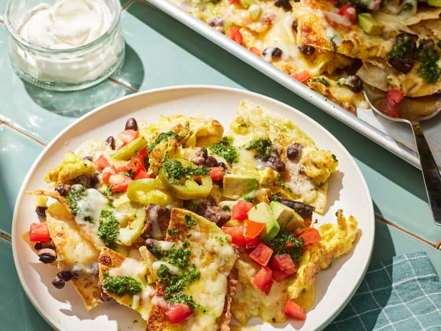

Breakfast Nachos Recipe

These breakfast nachos are a play on steak and eggs and they're out of this world. Salty tortilla chips are layered with sliced seared flat iron steak, eggs, beans, and cheese, broiled, dressed with everything else nacho, then finished with a zingy chimichurri sauce.
Ingredients
- 1 (8 ounce) flat iron steak, patted dry
- 3/4 teaspoon kosher salt, divided
- 1/2 teaspoon ground black pepper, divided
- 1/2 teaspoon ground cumin (optional)
- 2 tablespoons olive oil
- 8 large eggs
- 1 (11 ounce) package tortilla chips (such as Tostitos®)
- 2 (8 ounce) packages shredded Mexican cheese blend (such as Tilamook®)
- 1 (15 ounce) can black beans, drained and rinsed
- 1 cup chopped plum tomatoes
- 1 avocado, chopped
- 1/2 cup drained pickled jalapeno slices
- 1/2 cup sour cream, or as needed
Steps
- Gather all ingredients:
- Sprinkle steak evenly with 1/2 teaspoon of the salt, 1/4 teaspoon of the black pepper, and cumin, as desired:
- Whisk together eggs and remaining 1/4 teaspoon each salt and black pepper in a medium bowl until thoroughly blended:
- Preheat the oven’s broiler and place a rack about 12 inches from the heat source:
- To assemble nachos, arrange half of tortilla chips in an even layer on prepared baking sheet:
- Broil until cheese is melted and bubbly, about 2 minutes: